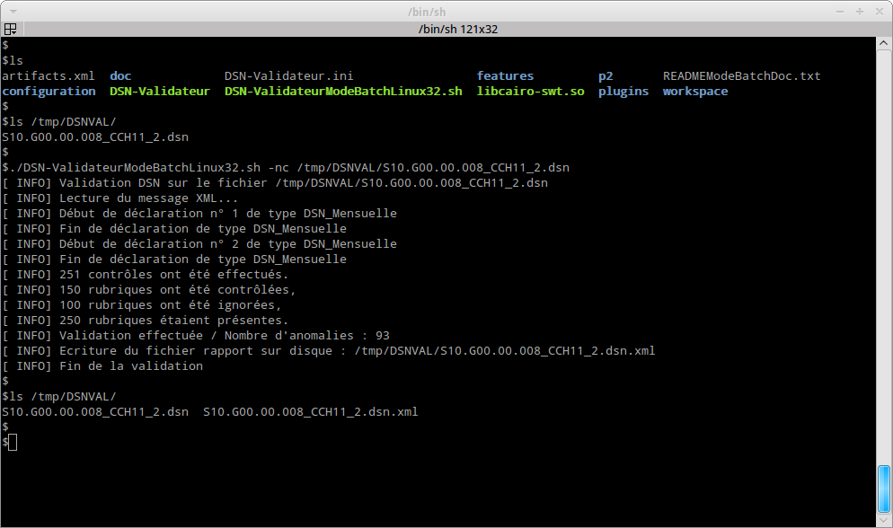
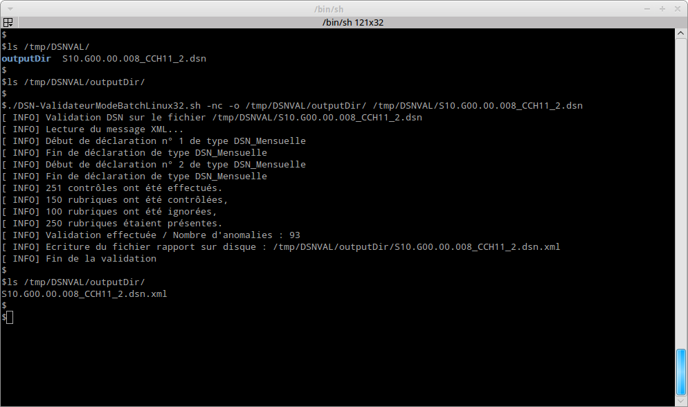

Pour pouvoir utiliser l’application en mode ligne de commande, il faut :
La machine sur laquelle est excute la validation en mode ligne de commande n’a pas besoin de serveur graphique.
Le plugin «fr.cnav.autocontrole.headless» permet de valider un message DSN en mode ligne de commande. Ce plugin est intgr à l’excutable DSN-Val. Pour excuter la validation, il faut se mettre dans le rpertoire d’installation de l’excutable DSN-Val (comme repère, ce rpertoire doit contenir : DSN-Validateur, plugins, features, ...) et ensuite lancer la commande suivante :
Pour Windows :
DSN-ValidateurModeBatchWin32.cmd [{--help|-h}]
DSN-ValidateurModeBatchWin32.cmd \
[{--output|-o} cheminDuRepertoireCible] [--grouping|-g] [{--limit|-l} nbreAnomalieLimite] \
[{--noCheckUpdate|-nc}]cheminDuMessageDsn.dns
Pour linux :
./DSN-ValidateurModeBatchLinux32.sh [{--help|-h}]
./DSN-ValidateurModeBatchLinux32.sh \
[{--output|-o} cheminDuRepertoireCible] [{--grouping|-g}] [{--limit|-l} nbreAnomalieLimite] \
[{--noCheckUpdate|-nc}]cheminDuMessageDsn.dns
Voici la description des paramètres de lancement :
Voici une copie d’cran de l’utilisation sur une machine linux sans utilisation du paramètre output :

Voici une copie d’cran de l’utilisation sur une machine linux avec utilisation du paramètre output :

| Nom | Message | Code |
|---|---|---|
| EC_NO_ERROR | No error | 0 |
| EC_NO_INPUT_FILE | Vous devez fournir un fichier DSN en paramètre. | 1 |
| EC_INPUT_FILE_NOT_EXIST | Le fichier ‹%s› n’existe pas. | 2 |
| EC_INVALID_LIMIT_ANOMALIE | La limite du nombre d’anomalies passe en paramètre ‹%s› n’est pas valide (doit être un entier). | 4 |
| EC_INVALID_OPTION | Option invalide. | 5 |
| EC_OUTPUT_DIR_PARMETER_NOT_EXIST | Le rpertoire ‹%s› pass en paramètre doit exister. | 6 |
| EC__OUTPUT_PARMETER_IS_NOT_DIR | La ressource ‹%s› passe en paramètre doit être un rpertoire. | 7 |
| EC_MUST_UPDATE_PRODUCT | Le produit doit être mis à jour pour raliser la validation avec ces options (sans --noCheckUpdate). Vous devez utiliser le produit en mode graphique pour raliser la mise à jour du produit.La validation peut être ralise sans faire la mise à jour en utilisant l’option --noCheckUpdate. | 8 |
| EC_UPDATESITE_NOT_AVAILABLE | L’update site ‹%s› est inaccessible. La vrification du besoin de mise à jour du produit ne peut pas être faite. La validation peut être ralise malgr ceci en utilisant l’option --noCheckUpdate. | 9 |
| EC_EMPTY_UPDATESITE | L’update site n’est pas configur, il peut être indiqu dans le fichier de configuration DSN-Validateur.ini. La vrification du besoin de mise à jour du produit ne peut pas être faite. La validation peut être ralise malgr ceci en utilisant l’option --noCheckUpdate. | 10 |
| EC_NEED_HELP | Vous avez besoin d’aide. | 11 |
| CANNOT_CREATE_PRJ | Le cration du projet %s a échoué (%s). | 21 |
| CANNOT_PERPARE_PRJ | La preparation du projet %s à échoué (%s). | 22 |
| CANNOT_REFRESH_FOLDER | Le rafaichissment des rpertoires de validation ont échoué. | 23 |
| CANNOT_PROCESS_SYNTACTIC_VALIDATION | La validation syntaxique a échoué. | 24 |
| CANNOT_PROCESS_SEMAMTIC_VALIDATION | La validation semantique a échoué. | 25 |
| CANNOT_LOAD_FILE | Le chargement du fichier ‹%s› a échoué. | 26 |
| CANNOT_CLOSE_FILE | La fermeture du fichier ‹%s› a échoué. | 27 |
| CANNOT_CREATE_NORME_DESCRIPTOR | La création du norme descripteur ‹%s› a échouée. | 28 |
| CANNOT_EXPORT_CURRENT_REPORT | L’exportation du rapport du fichier dsn courant dans le rapport ‹%s› dans le rpertoire contenteur %s a échoué. Verifier la validit du rpertoire. | 30 |
| CANNOT_EXPORT_HTML | L’exportation html n’est pas encore supporté. | 31 |
| CANNOT_EXPORT_XML | L’export XML a échoué. | 32 |
| ERROR_PATH_NOT_FILE | Le chemin ‹%s› ne correspond pas à un fichier. | 32 |
| ERROR_REPORT_CREATION | La creation du rapport de %s a échoué ( %s ). | 33 |
| ERROR_PROCESS_CONVERTION | La conversion a échoué. | 34 |
| ERROR_VALIDATE_SEMANTIC | La validation semantique a échoué (%s). | 36 |
| ERROR_MERGE_REPORTS | La fusion des rapports a échoué (%s). | 37 |
| ERROR_FORMATER_INI_CANNOT_ADD_VALUE | L’ajout de la valeur %s est immpossibe. Le nombre de valeur ne doit pas être plus grand que le nombre de titre %d. | 38 |
| ERROR_FORMATER_INI_NOT_EQUAL_LIST_SIZE | L’initalisation de formateur n’est pas correcte. Le nombre de %s %d et de %s %d est diffrent | 39 |
| ERROR_FORMATER_INI_NOT_PREPARE_METHOD_EXECUTED | L’initalisation du formateur n’est pas correcte. La mthode prepareValueLineSeparator n’a pas t invoqu | 40 |
| ERROR_ZIP_FILE_ACCESS | L’accès au fichier zip ‹%s› a échoué (%s). | 41 |
| CANNOT_CLOSE_ZIP_FILE | La fermeture du fichier Zip prcdent ‹%s› a échoué. (%s). | 42 |
| ERROR_EXTRACT_SALARIE_MSG_LIST | L’extraction des salaris du message a échoué (%s). | 43 |
| ERROR_EXPORT_IMPORT_TEMPLATE | Le template n’a pas pu être import, le projet (%s) est introuvable. | 44 |
| ERROR_SERIALISATION_REPORT_HEADLESS | Le fichier de destination n’a pu être sérialisé | 45 |
| ERROR_TECHNIC_VALIDATION | Une erreur technique s’est produite lors de la validation. Veuillez regarder la vue erreur log pour plus de détails. | 46 |
| ERROR_TECHNIC_EXPORT | Une erreur technique s’est produite lors de l’export. Veuillez regarder la vue erreur log pour plus de détails. | 47 |
| ERROR_OPENING_ERROR_LOG | Une erreur technique s’est produite lors de l’ouverture de la vue error log. | 48 |
| ERROR_SALARIE_VIEW_INITIALIZATION | Une erreur technique s’est produite lors de l’ouverture de la vue salarié. | 49 |
| ERROR_SALARIE_VIEW_REFRESH | Une erreur technique s’est produite lors du rafraîchissement de la vue salarié. | 50 |
| ERROR_NORME_VIEW_REFRESH | Une erreur technique s’est produite lors du rafraîchissement de la vue norme. | 51 |
| ERROR_NORME_VIEW_INITIALIZATION | Une erreur technique s’est produite lors de l’ouverture de la vue norme. | 52 |
| ERROR_PRINCIPAL_VIEW_REFRESH | Une erreur technique s’est produite lors du rafraîchissement de la vue principale. | 53 |
| ERROR_PRINCIPALVIEW_INITIALIZATION | Une erreur technique s’est produite lors de l’ouverture de la vue principale. | 54 |
| ERROR_NORME_VIEW_REFRESH | Une erreur technique s’est produite lors du rafraîchissement de la vue norme. | 55 |
| ERROR_NORME_VIEW_INITIALIZATION | Une erreur technique s’est produite lors de l’ouverture de la vue norme. | 56 |
| ERROR_PRINCIPAL_VIEW_REFRESH | Une erreur technique s’est produite lors du rafraîchissement de la vue principale. | 57 |
| ERROR_PRINCIPALVIEW_INITIALIZATION | Une erreur technique s’est produite lors de l’ouverture de la vue principale. | 58 |
| ERROR_CANNOT_RETRIEVE_BUNDLE | Le bundle de la norme ‹%s› n’a pu être r\u00E9cup\u00E9rer : | 60 |
| CANNOT_CREATE_NORME_DESCRIPTOR | La norme dont l’identifiant est ‹%s› ne correspond à aucune norme installée. La liste des normes installées est la suivante : | 61 |
| ERROR_NO_NORMS_REGISTERED | Il n’y a aucune norme install\u00E9e dans le produit. | 62 |
| ERROR_CANNOT_INSTANCIATE_DESCRIPTOR | La création du norme descripteur de la norme ‹%s› a échouée. | 70 |
| ERROR_CLASS_INSTANCIATED_IS_NOT_DESCRIPTOR | Le type fourni par la norme %s qui permet de créer un descripteur de norme ne correspond pas à un type attendu. | 71 |
| ERROR_CANNOT_INSTANCIATE_SERIALIZER | La création du sérialiseur de la norme ‹%s› a échoué | 72 |
| ERROR_CLASS_INSTANCIATED_IS_NOT_SERIALIZER | Le type fourni par la norme %s qui permet de créer un sérialiseur ne correspond pas à un type attendu. | 74 |
| EC_JAVA_VERSION | La version de java utilise (‹%s›) n’est pas bonne. Vous devez utiliser une verion 1.6 – 32 bits (configurer la variable DSNVAL_JAVA) | 99 |
| EC_JAVA_ARCHI | La version de java utilise est une version 64 bits. Vous devez utiliser une verion 1.6 – 32 bits (configurer la variable DSNVAL_JAVA) | 98 |
Le code retour de la commande peut être récupérer dans la variable ? ( echo $? ) dans un shell bash sous linux et la variable errorlevel sous windows ( echo %errorlevel% ).
Par dfaut, les scripts de lancement prennent le java qui est dfini dans le path du système. Si ce java n’est pas compatible avec le produit (Java 1.6 en version 32-Bit) un message nous indiquera que la version utilise n’est pas valide.
Nous pouvons configurer la version utilise en valorisant la variable DSNVAL_JAVA avec le chemin de l’excutable java voulu. Voici les commandes de configuration :
Pour Windows :
set DSNVAL_JAVA=c:\path\to\java.exe
Pour Linux :
export DSNVAL_JAVA=/path/to/java
Pour que les accents soient correctement restitus sous windows, deux actions peuvent être ralises :